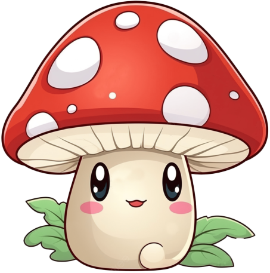
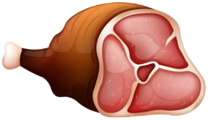
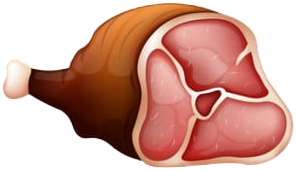
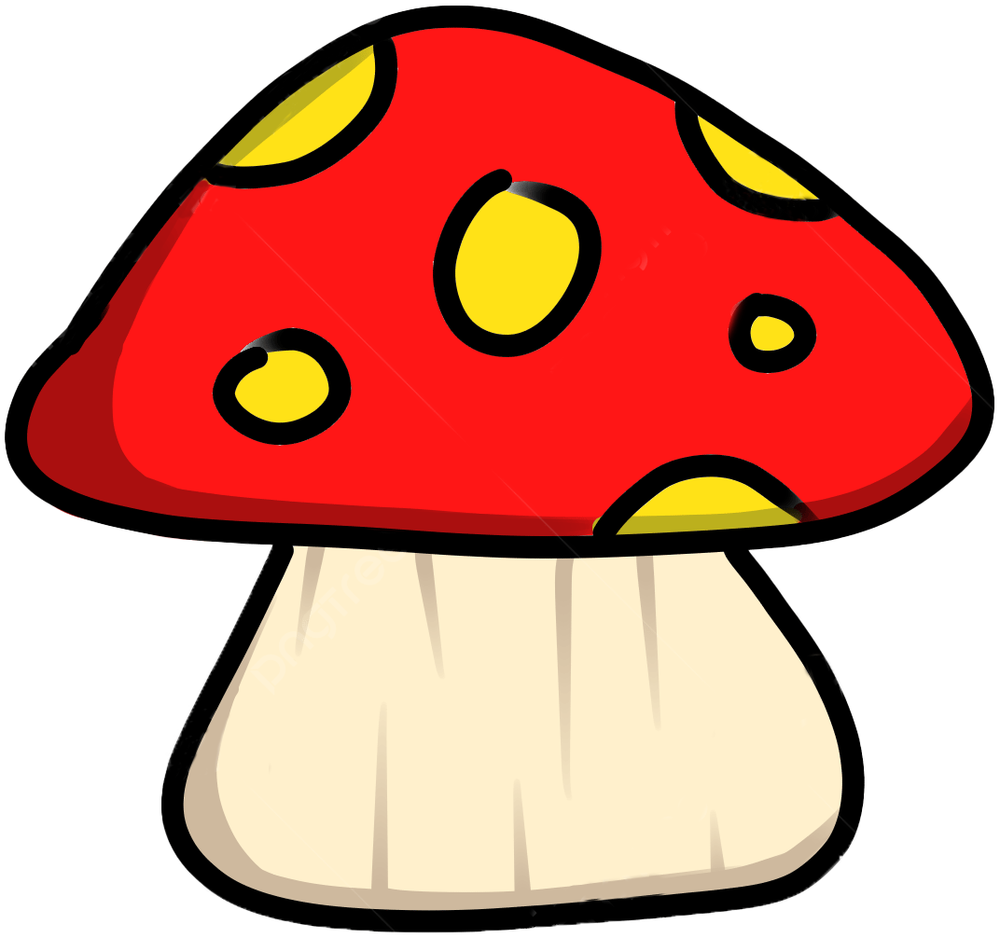
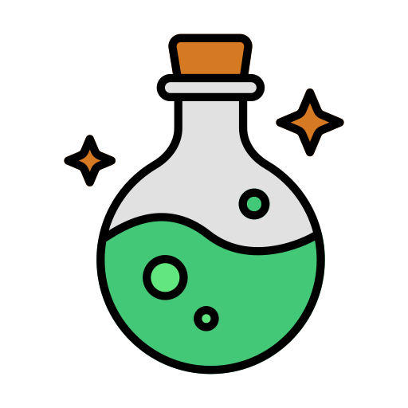

Règles du Jeu "Wolf's Hunt"
Objectif :
Le but du jeu est de guider un loup à travers un environnement forestier pour qu'il puisse se nourrir de manière sécurisée, en évitant les aliments empoisonnés et en se purgeant avec des herbes lorsqu'il ingère quelque chose de toxique.
Mécanique de Jeu :
Déplacement :
- Utilisez les touches de direction (flèches) pour déplacer le loup sur l'écran.
- Le loup peut se déplacer dans toutes les directions : haut, bas, gauche et droite.
Collecte de Nourriture :
- La nourriture apparaît aléatoirement sur l'écran.
-
La nourriture saine augmentera la santé du loup.
 

-
Les aliments toxiques réduiront la santé du loup.

-
Les aliments de soin réduiront l'empoisonnement du loup et lui
rendront de la santé.

Nourriture Saine :
- Les aliments sains (par exemple, viandes, baies, poissons) augmentent la jauge de santé du loup
- Le loup doit consommer autant de nourriture saine que possible pour maintenir sa santé.
Aliments Toxiques :
- Les aliments toxiques (par exemple, champignons vénéneux, viande pourrie) augemente la jauge d'empoisonnement du loup
- Si le loup mange un aliment toxique, il doit se purger pour éviter de perdre trop de santé.
Herbes pour la Purge :
- Les herbes apparaissent aléatoirement sur l'écran.
- Si le loup mange un aliment toxique, vous devez le déplacer vers une herbe pour se purger.
- La consommation d'herbes annule l'effet toxique et restaure 10 points de santé.
Jauge de Santé :
- La jauge de santé du loup est affichée en haut de l'écran.
- Le jeu commence avec la jauge de santé à 200 points.
- Si la jauge de santé atteint 0, le jeu est terminé.
Score :
- Le score est basé sur la quantité de nourriture saine empoisoné et de soin consommée.
- Chaque nourriture consommée ajoute des points au score total.
- Un tableau de score est affiché à la fin du jeu.
Instructions :
- Déplacez le loup en utilisant les touches de direction
- Cherchez et mangez de la nourriture saine pour maintenir et augmenter la santé du loup.
- Évitez les aliments toxiques ou, si ingérés, déplacez-vous rapidement vers les herbes pour vous purger.
- Survivez aussi longtemps que possible en maintenant la jauge de santé au-dessus de 0.
Fin de Partie :
- La partie se termine lorsque la jauge de santé du loup atteint 0.
- Le score final est affiché, et vous pouvez choisir de recommencer le jeu ou quitter.
Conseils :
- Soyez attentif aux aliments qui apparaissent. Apprenez à reconnaître rapidement les toxiques.
- Utilisez les herbes efficacement pour gérer les effets toxiques.
- Planifiez vos mouvements pour maximiser la collecte de nourriture saine et minimiser les risques.
Amusez-vous et bonne chasse !